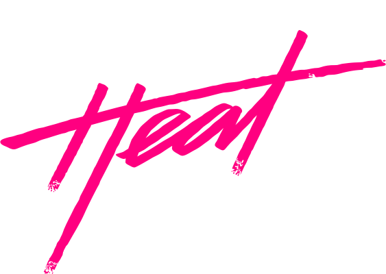

Corridas
Em determinadas corridas, com um carro de potência similar ao de seus oponentes, você terá disputas bem acirradas vencendo nos últimos segundos e perdendo posições no percurso, isso ao jogar no nível médio ou difícil, entre os quais fiquei alternando. Em outros momentos, até mesmo com um carro de menor potência, você consegue vencer a corrida com mais de um quilômetro de distância para o segundo colocado, isso sem nenhum motivo aparente.
Outro aspecto importante, ainda em a inteligência artificial, também fica por conta da polícia do jogo, que no começo se mostra bastante agressiva e torna algumas fugas quase impossíveis de serem realizadas. Apesar de isso parecer um ponto negativo, eu achei a experiência bem divertida de ter que fugir deles e, ao fazer um upgrade nos itens de série do carro, a fuga se torna uma tarefa mais fácil e agradável.
Já quem não tem um carro potente, poderá encontrar dificuldades para despistar os policiais no meio da cidade e terão que recorrer a outros meios. Um deles, por exemplo, é utilizar as rampas do jogo, que te fazem pular de alguns locais para outros, o que geralmente faz a polícia te perder de vista.
Aliás, algo que considerei bem interessante em Need for Speed Heat, é que quando você está correndo, existe a possibilidade de a polícia invadir a corrida, perseguindo a você e seus adversários. Assim, enquanto você está correndo, também será necessário despistar os policiais, que podem até lhe fazer perder algumas posições ou te ajudar, caso eles estejam interessados nos outros pilotos.